Instalación del ERP
A continuación se muestra el proceso de instalación de Odoo en Windows, desde la descarga del instalador hasta la configuración de la base de datos.
Accedemos a la URL https://www.odoo.com/es_ES/page/download para descargar Odoo. En este caso descargamos la versión Community para Windows.
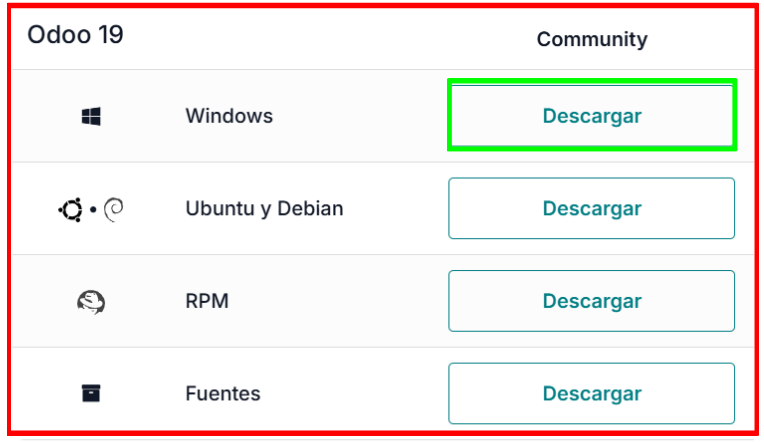
Figura 1 — Página de descarga de OdooUna vez descargado el archivo, lo abrimos y se nos mostrará la ventana de inicio del instalador de Odoo.
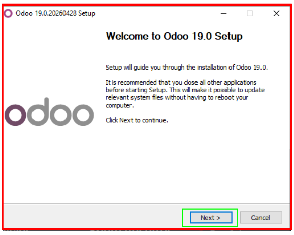
Figura 2 — Ventana de inicio del instaladorEn la siguiente ventana aceptamos los términos de la licencia haciendo clic en I Agree.
 Figura 3 — Aceptación del acuerdo de licencia
Figura 3 — Aceptación del acuerdo de licencia
La siguiente ventana es similar a la anterior. Sin hacer ningún cambio, hacemos clic en Next para continuar.
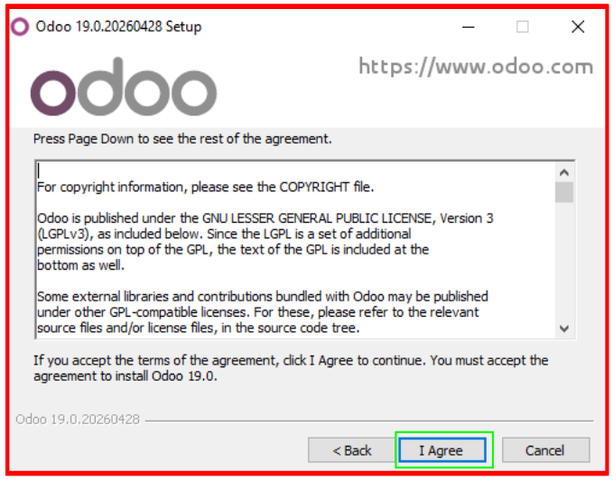
Figura 4 — Continuar con la instalaciónA continuación configuramos la conexión con PostgreSQL. En este caso únicamente modificamos el nombre de usuario y la contraseña. Una vez configurado, hacemos clic en Next.
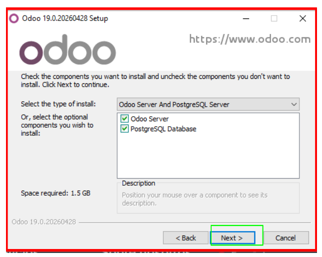
Figura 5 — Configuración de la conexión PostgreSQLEn esta pantalla se muestra la ruta donde se instalará Odoo. No es necesario modificar nada, simplemente hacemos clic en Install para iniciar la instalación.
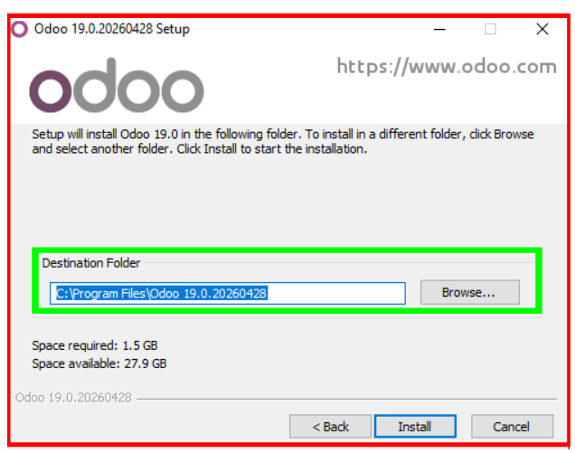
Figura 6 — Directorio de instalación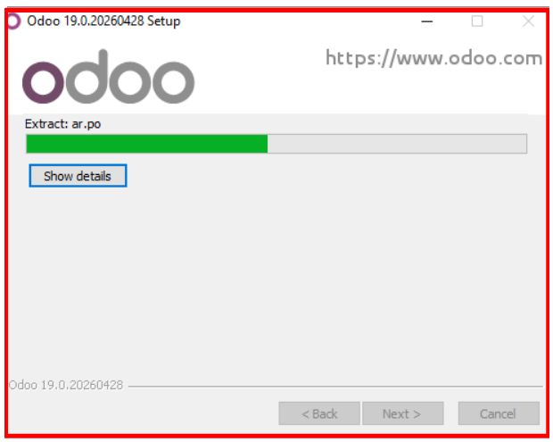
Figura 7 — Progreso de la instalaciónUna vez completada la instalación, el sistema nos redirige a una ventana de configuración inicial donde debemos introducir un nombre para la base de datos, un email, una contraseña y seleccionar el idioma y país según nuestras preferencias.
 Figura 8 — Configuración inicial de Odoo
Figura 8 — Configuración inicial de Odoo
Creación del Módulo 1
A continuación se muestra el proceso de configuración del módulo de Empleados en Odoo, incluyendo la creación de departamentos, empleados, contratos y la realización de una copia de seguridad.
2.1 Módulo de Empleados
Una vez tenemos instalado el ERP accedemos a localhost:8069. Dentro del panel de aplicaciones buscamos el módulo de Empleados y hacemos clic en Activar.
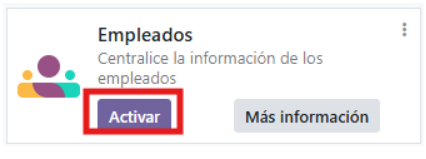
Figura 1 — Activación del módulo de EmpleadosCon el módulo activo, entramos dentro y nos dirigimos al apartado de Departamentos. Hacemos clic en Nuevo para crear los departamentos necesarios. En este caso hemos creado tres: Venta Perfumes, Atención al Cliente y Marketing.
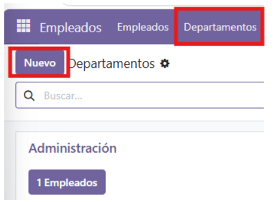
Figura 2 — Apartado de Departamentos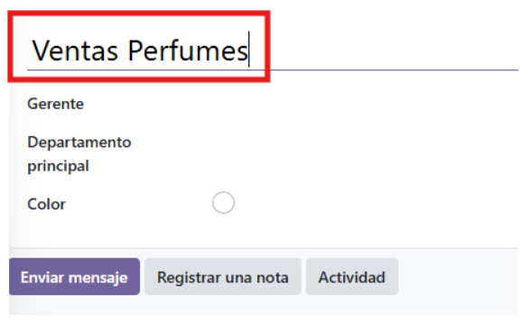
Figura 3 — Departamentos creadosA continuación accedemos al apartado de Empleados y hacemos clic en Nuevo para añadir trabajadores. Para cada empleado rellenamos su nombre, email y número de teléfono. En el apartado de trabajo seleccionamos su departamento y puesto. Una vez todo configurado hacemos clic en Crear usuario.
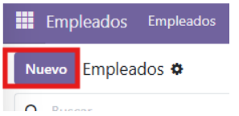
Figura 4 — Formulario de nuevo empleado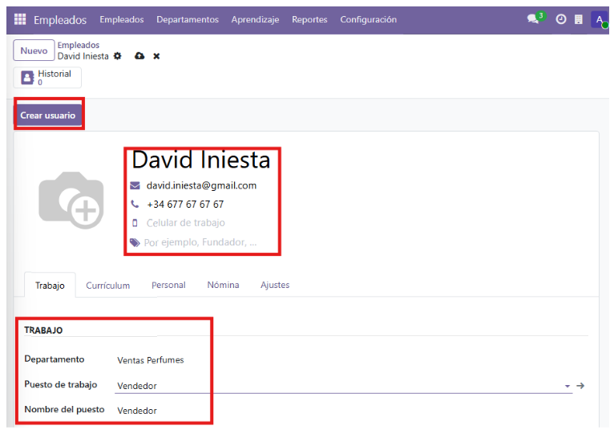
Figura 5 — Datos del empleado configuradosPor último, accedemos al apartado de Nómina para completar los datos del contrato de cada empleado: salario, tipo de empleado, tipo de contrato, categoría del pago y horas laborables.
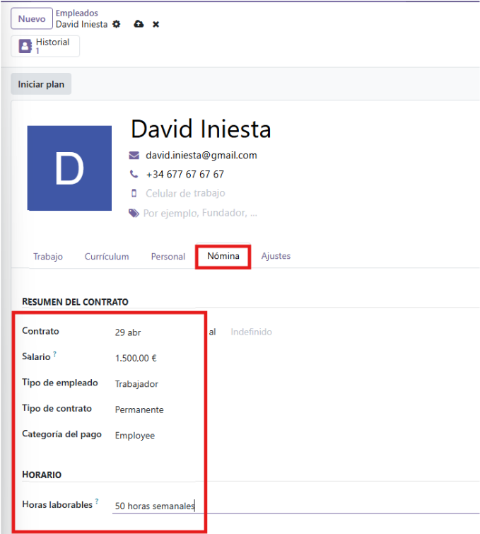
Figura 6 — Apartado de Nómina Figura 7 — Datos del contrato del empleado
Figura 7 — Datos del contrato del empleado
2.2 Backup de la Base de Datos
Realizar copias de seguridad de forma periódica es fundamental para garantizar la integridad de los datos. Odoo incluye un gestor de bases de datos accesible desde el navegador.
Accedemos a la URL http://localhost:8069/web/database/selector y hacemos clic en Manage Database.
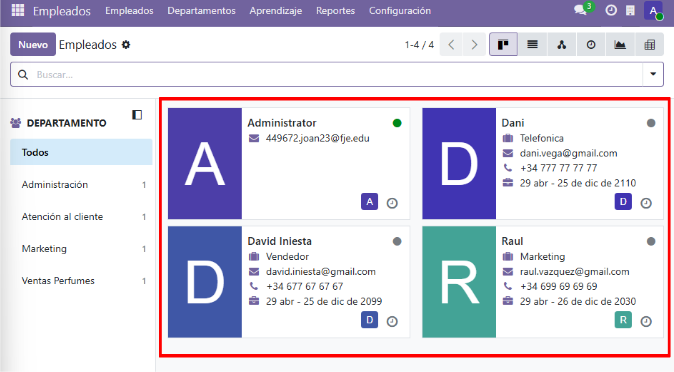
Figura 8 — Selector de base de datosDentro del gestor hacemos clic en el botón Backup. El sistema nos solicitará las credenciales de administrador para confirmar la operación.
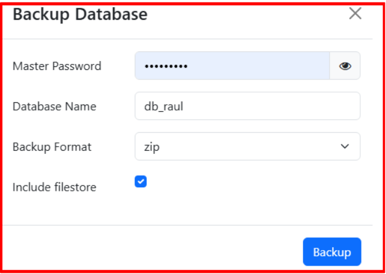
Figura 9 — Credenciales para el backupUna vez introducidas las credenciales correctamente, el sistema genera y descarga el archivo de backup. Con esto el proceso de copia de seguridad queda completado.
 Figura 10 — Backup completado
Figura 10 — Backup completado
2.3 ¿Por qué hemos escogido este módulo?
Porque una tienda de perfumes necesita gestionar a sus vendedores: contratos, salarios y horarios. Al tenerlo integrado en el mismo ERP que el inventario, puedes ver directamente qué vende cada empleado y cuánto te cuesta, sin usar programas externos.
Creación del Módulo 2
A continuación se muestra el proceso de configuración del módulo de inventario en Odoo, incluyendo el acceso inicial, la adición de productos y la realización de una copia de seguridad.
3.1 Módulo de Inventario
Una vez tenemos instalado el ERP accedemos a localhost:8069. Dentro del panel de aplicaciones escogemos el módulo que queremos activar. En este caso seleccionamos el módulo de Inventario. Al darle a activar, el sistema nos pedirá que iniciemos sesión.
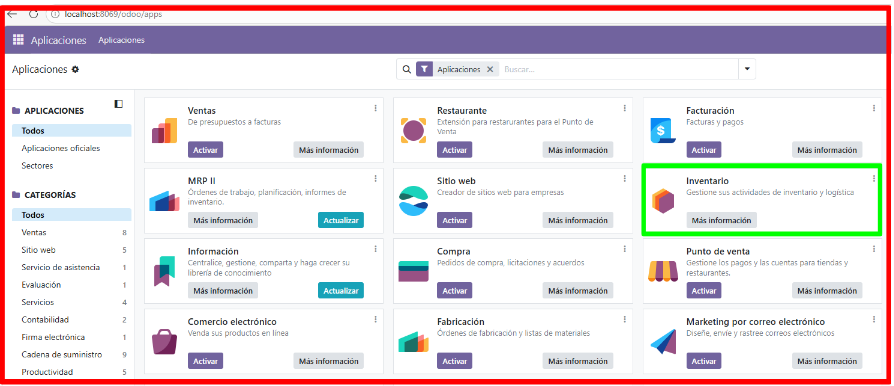
Figura 1 — Selección del módulo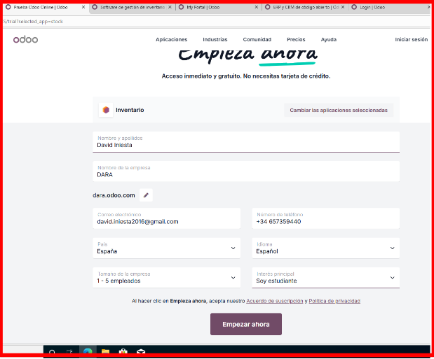
Figura 2 — Inicio de sesiónTras iniciar sesión correctamente, el sistema muestra el panel principal con los módulos disponibles. En nuestro caso aparece el módulo de Inventario listo para usar.
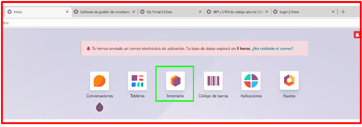
Figura 3 — Panel principal con el módulo de inventarioUna vez dentro del módulo, para añadir productos hacemos clic en el botón Nuevo de la esquina superior izquierda. Esto abre el formulario de creación de producto.
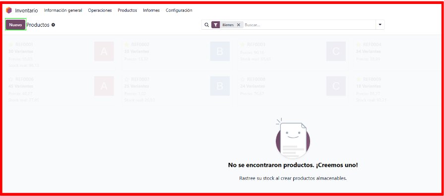
Figura 4 — Acceso al formulario de nuevo productoEn el formulario de nuevo producto rellenamos los campos necesarios: nombre del producto, cantidad en stock, precio de venta y precio de compra. Una vez introducidos todos los datos guardamos el registro. Podemos repetir este proceso para añadir todos los productos que necesitemos.
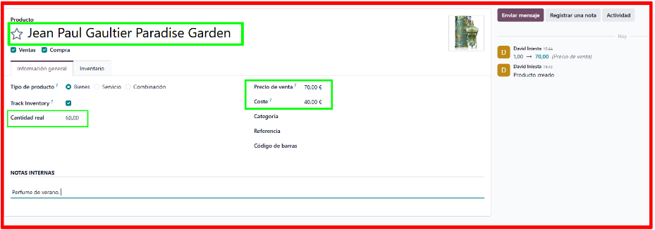
Figura 5 — Formulario de nuevo productoCon los productos creados y guardados, el módulo de inventario queda configurado. En la siguiente captura se puede ver el resultado final con el listado de productos añadidos.
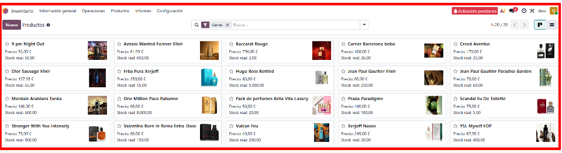
Figura 6 — Resultado del módulo de inventario3.2 Backup de la Base de Datos
Realizar copias de seguridad de forma periódica es fundamental para garantizar la integridad de los datos. Odoo incluye un gestor de bases de datos accesible desde el navegador.
Accedemos a la URL http://localhost:8069/web/database/selector y dentro de la pantalla hacemos clic en Manage Database.
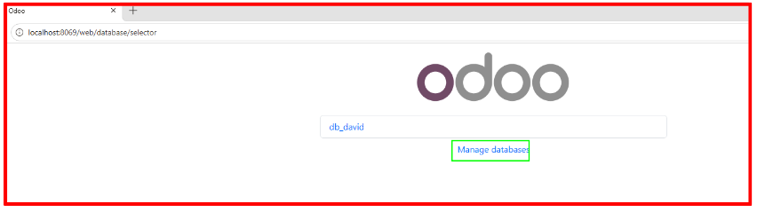
Figura 7 — Selector de base de datosDentro del gestor de bases de datos hacemos clic en el botón Backup. El sistema nos solicita las credenciales de administrador para confirmar la operación.
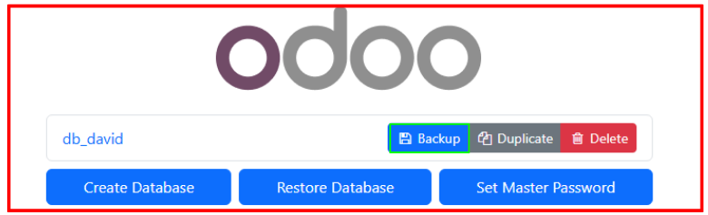
Figura 8 — Opción de backup en el gestor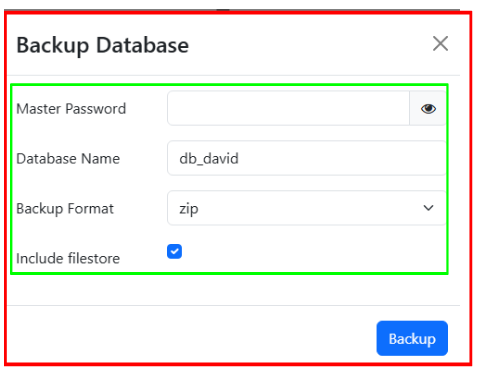
Figura 9 — Introducción de credencialesUna vez introducidas las credenciales correctamente, el sistema genera y descarga el archivo de backup. Con esto el proceso de copia de seguridad queda completado.
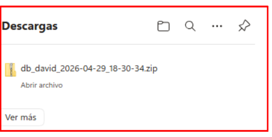
Figura 10 — Backup completado3.3 ¿Por qué hemos escogido este módulo?
He escogido el módulo de inventario porque en una empresa de perfumes es básico controlar el stock. Al final son productos físicos y necesitas saber qué tienes, qué falta y qué se está vendiendo.
Restaurar la Base de Datos del Compañero
Una vez cada uno tiene su backup, el siguiente paso es restaurar la base de datos del compañero en nuestra propia máquina. Así tenemos ambas bases de datos en el mismo entorno Odoo.
Accedemos a http://localhost:8069/web/database. En esta pantalla veremos nuestra base de datos y encontraremos el botón Restore Database. Hacemos clic en él para importar la base de datos del compañero.
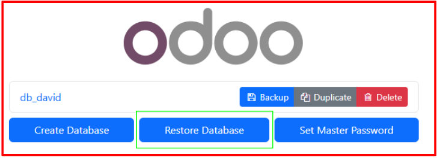
Figura 1 — Pantalla de restauración de base de datosEn el formulario de restauración introducimos nuestra contraseña de administrador, seleccionamos el archivo .zip del backup del compañero y escribimos el nombre que queremos darle a esa base de datos. Una vez completado hacemos clic en continuar y la base de datos quedará importada.
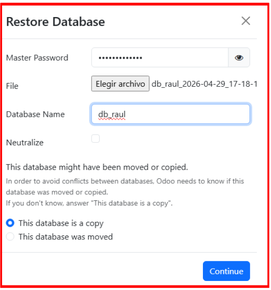
Figura 2 — Formulario de restauración4.1 Resultados Finales
Con la restauración completada, cada uno tiene en su Odoo las dos bases de datos: la propia y la del compañero. A continuación se muestran los resultados finales de cada instalación.
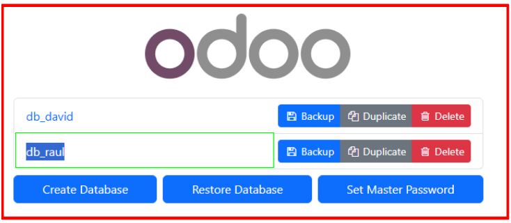
Resultado final — David Iniesta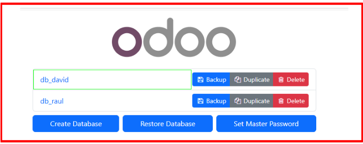
Resultado final — Raul Vázquez